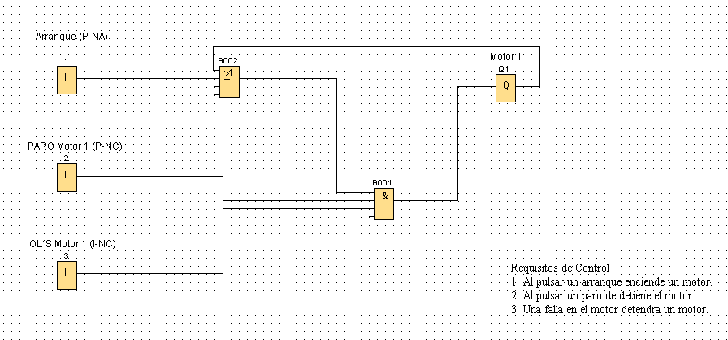

Proyecto PLC - ICC 2025
Autor(es): Carlos Adonaí Talamantes González / Miguel Muro Rodríguez
Ingeniería en Computación | Universidad Autónoma de Nayarit

(AÚN EN DESARROLLO)
Ingeniería en Computación | Universidad Autónoma de Nayarit
(AÚN EN DESARROLLO)
Este proyecto presenta el diseño, programación y simulación de todos los bloques especiales, con la finalidad de difundir el conocimiento mediante el uso del simulador LOGO!Soft Comfort.
El bloque especial “Retardo a la conexión” (también conocido como TON, por Timer On-Delay) retrasa la activación de una salida durante un tiempo determinado después de que la entrada haya recibido una señal de encendido. En otras palabras, cuando la entrada se activa, el temporizador comienza a contar; solo cuando se cumple el tiempo programado, la salida se energiza. Si la señal de entrada se interrumpe antes de que el tiempo termine, el conteo se reinicia y la salida no se activa. Este bloque se utiliza comúnmente para evitar arranques instantáneos de equipos, coordinar secuencias de encendido o introducir pausas controladas en sistemas automatizados.
Contenido del bloque 2...
En esta sección puedes descargar el archivo del proyecto en formato .lsc, el cual contiene la programación del sistema PLC desarrollada en el software correspondiente. Además, se incluye una imagen ilustrativa del sistema simulado.
